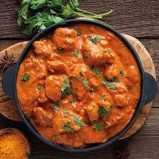

Butter Chicken
Description
Butter chicken is a classic Indian dish that is beloved around the world for its creamy, flavorful tomato-based
curry sauce and tender, juicy pieces of chicken. The dish is typically served with rice or naan bread and is a
comforting and satisfying meal that is perfect for any occasion.
Ingredients
- 1 lb boneless, skinless chicken breasts, cut into small pieces
- 1/2 cup plain yogurt
- 1 tbsp grated ginger
- 2 cloves garlic, minced
- 1 tbsp garam masala
- 1 tsp cumin
- 1 tsp turmeric
- 1 tsp chili powder
- 2 tbsp butter
- 1 onion, chopped
- 2 cloves garlic, minced
- 1 tbsp grated ginger
- 1 tbsp garam masala
- 1 tsp cumin
- 1 tsp turmeric
- 1 tsp chili powder
- 1 can (14 oz) crushed tomatoes
- 1 cup heavy cream
- Salt, to taste
- Chopped fresh cilantro, for garnish
Steps
- In a large bowl, mix together the chicken, yogurt, ginger, garlic, garam masala, cumin, turmeric, and chili
powder. Cover the bowl and refrigerate for at least 1 hour, or overnight.
- Preheat the oven to 400°F (200°C). Line a baking sheet with parchment paper and arrange the marinated chicken
pieces on the sheet. Bake for 15-20 minutes, or until cooked through.
- In a large saucepan, melt the butter over medium heat. Add the onion, garlic, and ginger and cook until the
onion is soft and translucent, about 5 minutes.
- Add the garam masala, cumin, turmeric, and chili powder to the saucepan and cook for another 2 minutes, stirring
constantly.
- Add the crushed tomatoes and simmer for 10-15 minutes, until the sauce has thickened slightly.
- Add the cooked chicken to the saucepan and stir to coat it in the tomato sauce.
- Stir in the heavy cream and simmer for another 5-10 minutes, until the sauce has thickened and the chicken is
cooked through.
- Season with salt to taste, and garnish with chopped cilantro before serving.